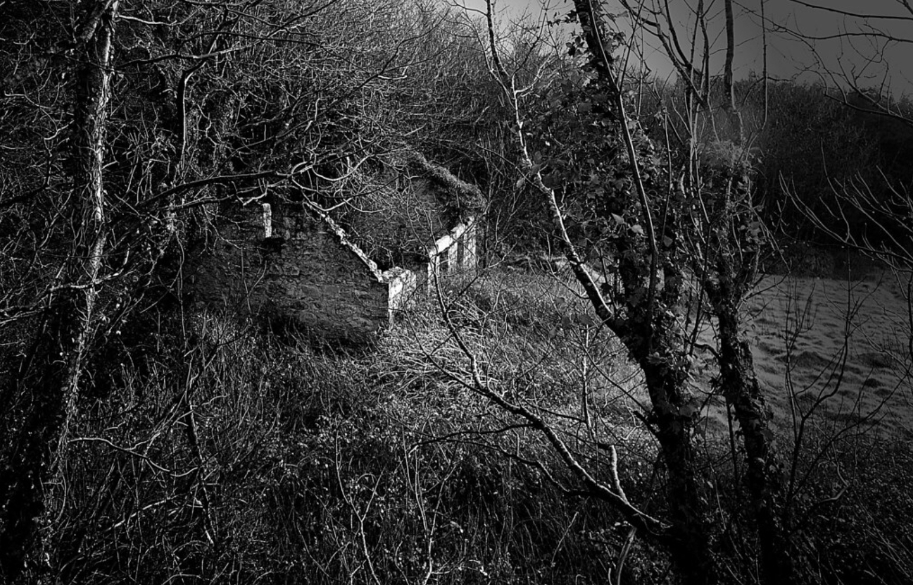

Informações Iniciais
Dificuldade: Indeterminado.
- Propriedades misteriosas;
- Informações desconhecidas;
- Entidades não-documentadas;
Indicação: Evitar ao máximo a entrada neste nível.

Th3 Sh4dy Gr3y - subnível 0zero
Th3 Sh4dy Gr3y é um conjunto de subníveis perigosos e instáveis, todos reunídos num grande nível enigmático.
Seus subníveis são divididos em 8:
- 0Zero: O primeiro e mais estável nível do Th3 Sh4dy Gr3y. Assim como em todo resto do nível, está em preto, branco e tons de cinza. É também o subnível mais seguro dentre todos os outros, desde que evacuado antes de anoitecer,
já que, quando a noite cai, o nível se torna infestado de entidades e toda água de amêndoa do nível se transforma em dor líquida.;
- 1One: É uma espécie de Mansão em preto e branco. A maioria dos móveis deste local são instáveis e se encontram "bugados". Tocar em qualquer um desses móveis ocasionará em morte. Há também no subnível uma entidade única, chamada
de "The Landlord";
- 2Two: Esse subnível tem a aparência de uma floresta nevada, porém, nela, faz um calor extremo, causando confusão ao andarilho. Neste subnível também existem entidades únicas chamadas de "Fallen Angels" ou "Anjos Caídos", que
auxiliam o andarilho a deixar o subnível;
- 3Three: Esse subnível assume a forma de um oceano, com a particularidade de conter diversos relógios flutuando nele. Até agora foram encontrados 4 tipos de relógios flutuando no oceano (analógicos, digitais, de pulso e antigos),
cada um com uma particularidade ao ser tocado.
- 4Four: O último dos níveis considerados estáveis. É uma espécie de rio que aparenta ser infinito e possui arranha-céus que muitas vezes desafiam as leis da física. Entrar em qualquer prédio desses é altamente não-recomendado.
Além disso, existem facelings armados nas ruas que vão te assaltar na primeira oportunidade que tiverem. É possível também encontrar alguns mangleds.
- L0ST H0PE: Muito pouco documentado, é onde a estabilidade do Th3 Sh4dy Gr3y desaparece. É praticamente impossível sobreviver ou escapar.
- 2 F4R: Você foi muito longe. Muitas camadas da realidade colapsam sobre você.
- TH3 3ND: B3M-V1ND0 A0 F1M. SU@ 4LMA 3ST4 M0RT4.
Entradas / Saídas
Entradas: Não se sabe formas de como entrar no nível.
Saídas: N40 H4 S41DAS.
Links
Wikidot (em inglês)
Wikidot (em português)
Wikifandom (em português)